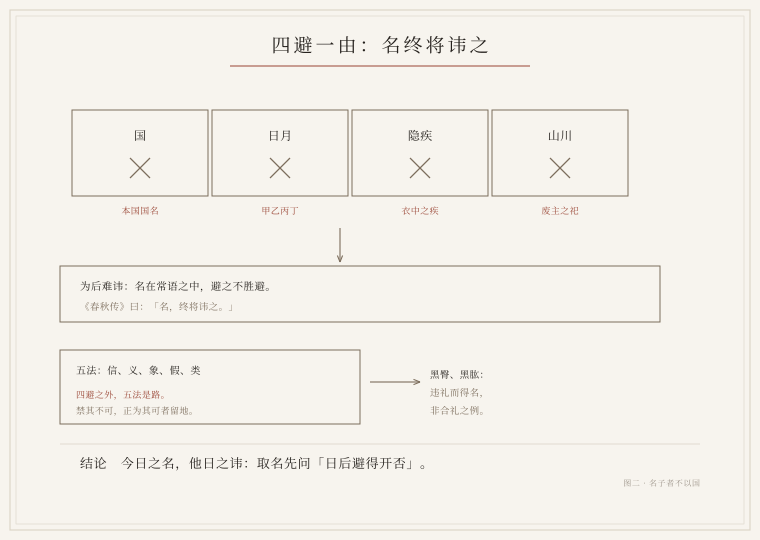

曲礼上 · 一·五十七 · 第 55 课
给儿子取名，有四种字不能用：本国国名、日月、身上隐处的病、名山大川。所避的不是字不好，是这字将来「讳」不掉。
说什么事：名子者不以国，不以日月，不以隐疾，不以山川。
落在哪一层：教。上节讲礼可减，此节讲名不可苟。
为何编在此位：一·五十六讲「不以所有责人」，此节讲「不以所难累后」；一宽一严，皆为人留余地。
【经】名子者不以國，不以日月，不以隱疾，不以山川。
【注】此在常語之中，為後難諱也。《春秋傳》曰：「名，終將諱之。」隱疾，衣中之疾也，謂若「黑臀」、「黑肱」矣。疾在外者，雖不得言，尚可指摘。此則無時可辟，俗語云：「隱疾難為醫。」
名子者 名，作动词，取名。疏：「此一节明与子造名字之法。」
不以国 疏：「不以本国为名。」杜氏注《春秋》桓六年传同。若是他国，即得为名——《春秋》有卫侯晋、晋侯周。
不以日月 疏：「不以甲乙丙丁为名。」殷家质，不讳名，故殷得以干支为名；周人讳，故禁。疏又举鲁僖公名申、蔡庄公名甲午，以为周末乱世不能如礼。
不以隐疾 注：「隐疾，衣中之疾也。」疏：「不以体上幽隐之处疾病为名。」
不以山川 《左传》申繻语「以山川则废主」。鲁献公名具、武公名敖，其后具山、敖山皆以乡名代之，即此戒之验。
为后难讳 注：「此在常语之中，为后难讳也。」常语，日用之言；名若落于常语，则后日处处当避，避之不胜避。
名，终将讳之 注引《春秋传》。人死为神，神主有名，故终必讳；今日之名，即他日之讳。
给儿子取名，不用国名，不用干支日月，不用身上隐处的病名，不用山川之名。
一节四「不以」，理由只有一个：为后难讳。取名不是取一个好字，是取一个将来「避得开」的字。名字一旦落在国名、干支、隐疾、山川上，后代便日日与之相撞。此节把命名从「当下的好意」挪到「日后的余地」上。
第一层 讳的机制 周人以讳事神。祖先之名，后世子孙在言语、文书、器物上都要避开。名既入常语，则避之无时不在；故取名之初，先问此字日后避得避不得。
第二层 四避各有所废 《左传》申繻说其害：以国则废主（国名不可复称），以官则废职，以山川则废主（山川之祀无所称），以畜牲则废祀，以器币则废礼。此记只举四，传文更备。所废者皆公共之事，非一人之名所能任。
第三层 隐疾最难避 注说得最切：疾在外者，虽不得言，尚可指摘；隐疾在衣中，无时可辟。故俗语「隐疾难为医」。此条独深，正在「难辟」二字。
第四层 正面的门径 《左传》又举命名五法：有信（以名生）、有义（以德命）、有象（以类命）、有假（取于物）、有类（取于父）。四避之外，五法是路。禁其不可，正为其可者留地。
与今日何干 今人取名多求好听、好写、好意头，少问「日后好不好叫」。此节可作一条尺：名字要留余地给后来的人。
| 左 | 右 |
|---|---|
| 不以国 | 本国国名；他国得以为名 |
| 不以日月 | 甲乙丙丁；殷质不讳故得 |
| 不以隐疾 | 衣中之疾，无时可辟 |
| 不以山川 | 废主之祀（献、武废二山） |
| 为后难讳 | 名在常语，避之不胜避 |
| 名终将讳之 | 今日之名，他日之讳 |
画案上五枚木牌，牌面各刻一字（不写具体文字，只作刻画痕）：第一枚刻国字形痕，第二枚刻两短横如干支，第三枚只在牌心一处阴影，第四枚刻山形，第五枚空白完好。前四枚各被一道赭线斜划去，第五枚立于案上。不画人。
